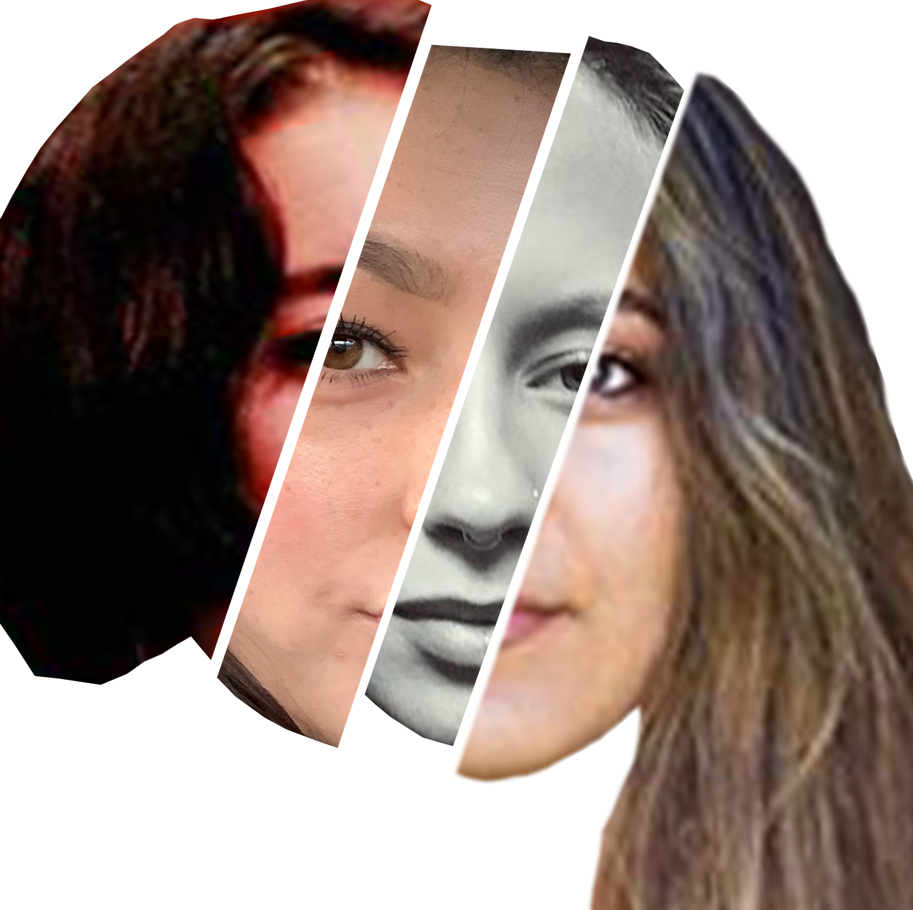
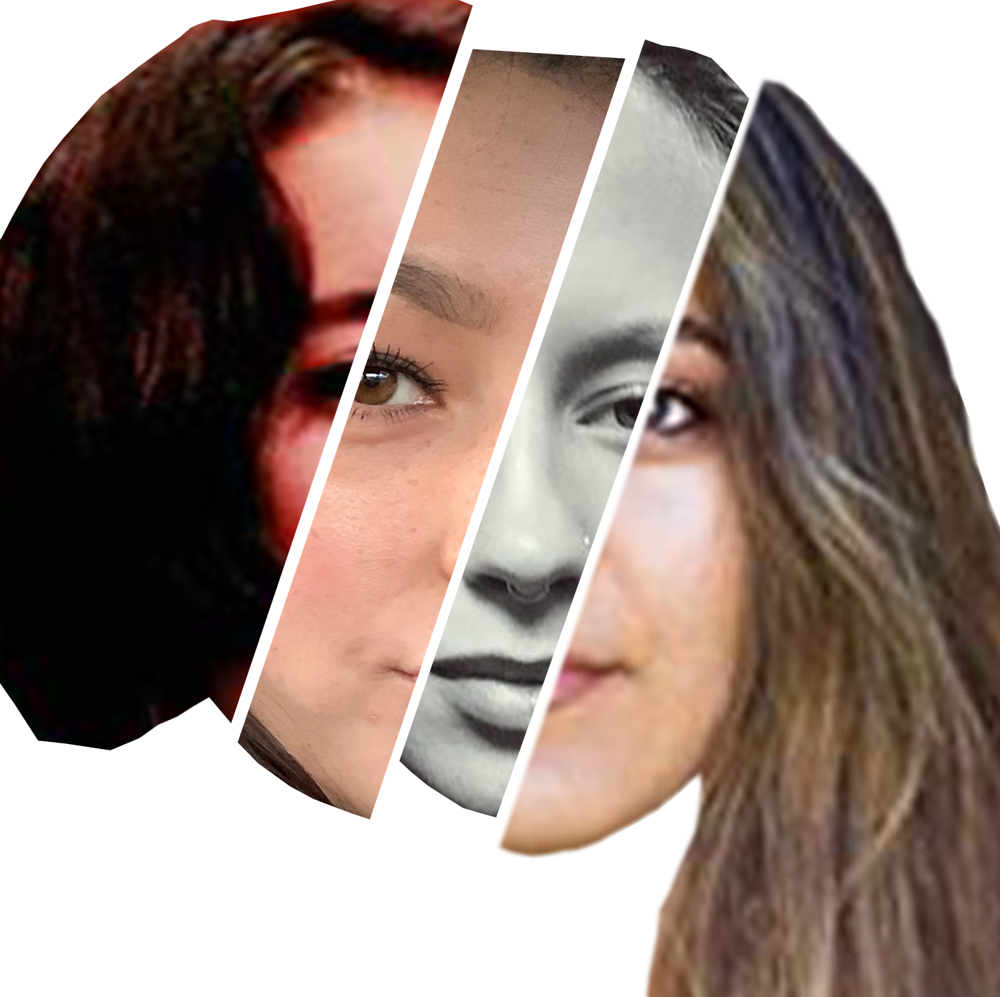

This project focuses on the complex experiences of young multiracial women. I’ve explored the ways in which being mixed race is unique, confusing and sometimes gratifying in a society where the conversation about race is still so fragile. I myself am half-black and half-white, and have dealt with a plethora of distinct situations where my being mixed changed how people talked to me, felt about me or understood me.
By Aja Pilar Simpson